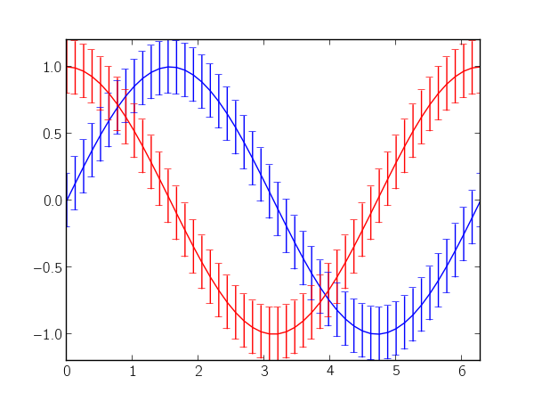
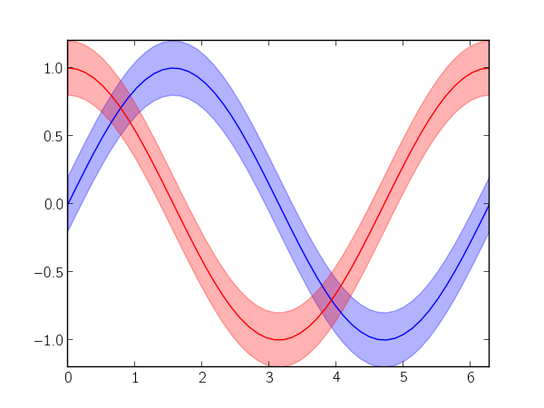

Articles
This blog is mostly dedicated to producing "pretty" scientific plots using Matplotlib and was partly inspired by Gnuplotting. There are plenty of example plots in the Matplotlib gallery, but this blog will (probably) be more focused on tweaking the aesthetics of plots.
Occasionally, I may stray into other topics, such as design, presentations, scientific publications, LaTeX, fluid mechanics, etc.
Article ArchivesPlotting error bars
March 24, 2012tags: matplotlib, line plots
Let's say you have some continuous data with a continuous error (or variance) measurement. Typically, you would just call matplotlib's errorbar function:
import numpy as np
import matplotlib.pyplot as plt
x = np.linspace(0, 2 * np.pi)
y_sin = np.sin(x)
y_cos = np.cos(x)
plt.errorbar(x, y_sin, 0.2)
plt.errorbar(x, y_cos, 0.2)
plt.show()
which produces the following plot:
The numerous error bars make the plot really noisy, and, in my opinion, they're really distracting. Instead, you could use matplotlib's fillbetween to denote the error as a region in the plot. In the following, I try to imitate errorbar's interface (minus many additional key-word arguments):
def errorfill(x, y, yerr, color=None, alpha_fill=0.3, ax=None):
ax = ax if ax is not None else plt.gca()
if color is None:
color = ax._get_lines.color_cycle.next()
if np.isscalar(yerr) or len(yerr) == len(y):
ymin = y - yerr
ymax = y + yerr
elif len(yerr) == 2:
ymin, ymax = yerr
ax.plot(x, y, color=color)
ax.fill_between(x, ymax, ymin, color=color, alpha=alpha_fill)
Continuing with the data and imports from the first code block, you can use the errorfill function as follows:
errorfill(x, y_sin, 0.2)
errorfill(x, y_cos, 0.2)
plt.show()
which gives:
With the fill method, you lose information about the direction of the error (especially if you have errors in both x and y), but for most use cases, this works pretty well.
Older articles
-
Line-color cycling
March 04, 2012tags: matplotlib, line plots, mpltools, color
When plotting a series of lines, it's nice to pull a series of colors from a colormap (especially if there's some sequential relationship between lines). In fact, this has been asked (and answered) multiple times on the Matplotlib mailing list (e.g., [1] and [2]) and on StackOverflow ...
read more
Page 1 / 1